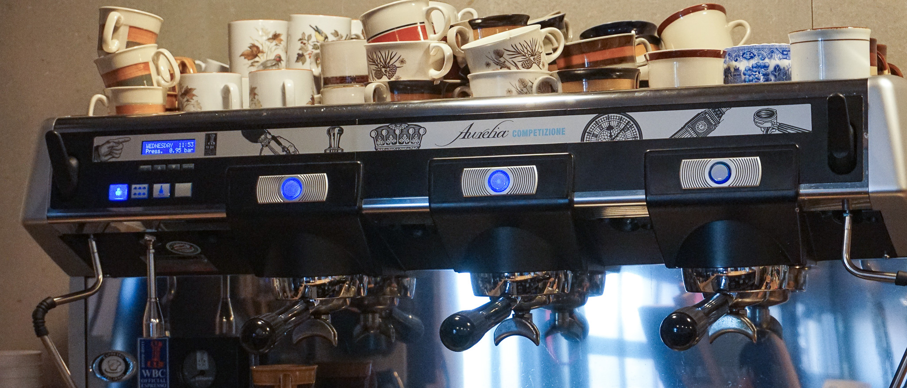
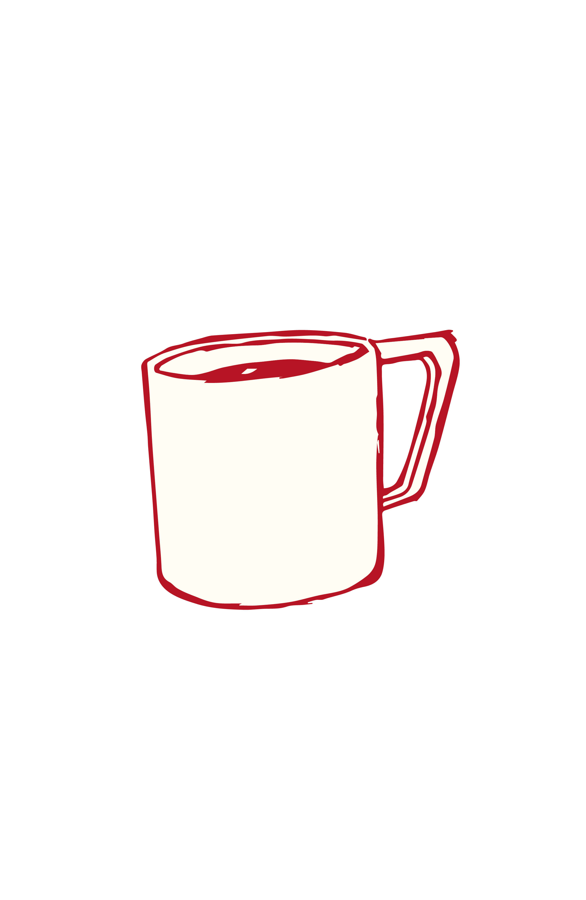
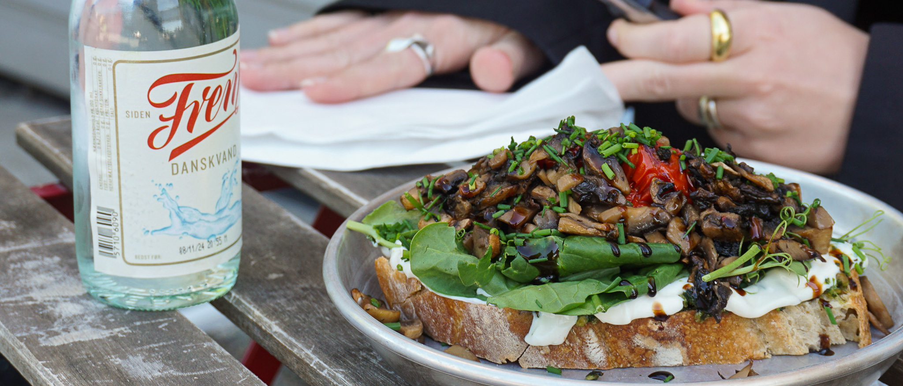
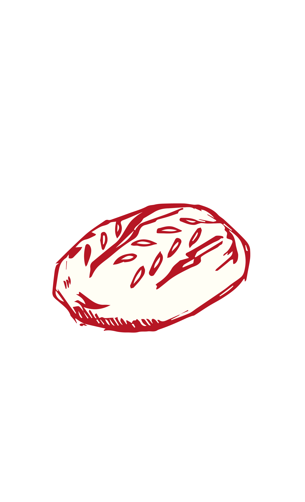

LOKALE RÅVARER ER BARE BEDRE
Her hos Fikumdik er der ikke så meget dikkedarer. Vores menu er derfor meget simpel. Dog er vi ikke gået ned på kvaliteten. Vi bruger udelukkende lokale leverandører og vi udvælger dem med omhug. Ret lækre ting hvis vi selv skal sige det.



×
Skal du have kaf’? Kaffen du kan nyde på vores café får vi
leveret
fra
Stillers Coffee.
KAFFEN ER KLAR
Skal du have kaf’? Kaffen du kan nyde på vores café får vi
leveret
fra
Stillers Coffee.
Stillers Coffee er lokalt fra Aarhus og er kvalitet fra aller øverste hylde.
Du kan godt glæde dig!


×
Bagværket du får serveret er fra Jeremys. Et bageri beliggende i Åbyhøj. Alt bagværk er
økologisk og af aller højeste kvalitet. Lige som vi allerbedst kan lide det.
ER DU SULTEN?
Bagværket du får serveret er fra Jeremys. Et bageri beliggende i Åbyhøj. Alt bagværk er
økologisk og af aller højeste kvalitet. Lige som vi allerbedst kan lide det.
Hvilken variant frister mon dig mest?
